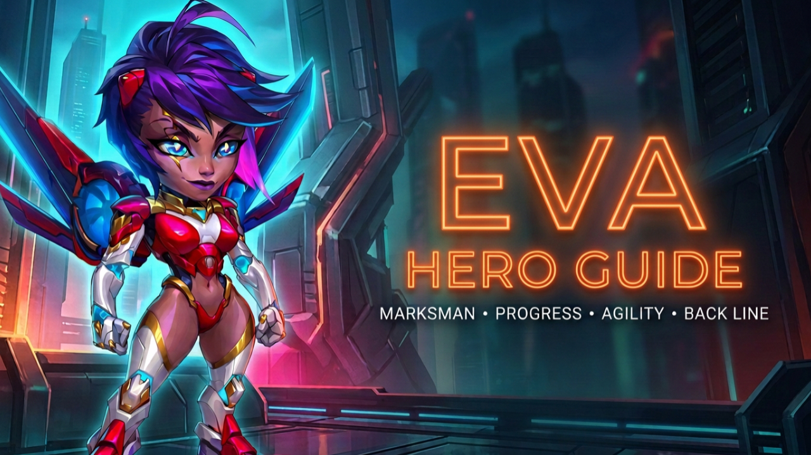

SKILLS
| Skill | Name | What It Does |
|---|---|---|
| 1st Skill | Impossible Shot | Eva aims for 3 seconds and attacks the nearest enemy, dealing Physical Damage plus additional Physical Damage based on 25% of the target's Maximum Health. Especially dangerous against high-Health frontline heroes. |
| 2nd Skill | Focusing Scope | Attacks the farthest enemy and applies Marked for 9 seconds. The marked target also receives 50% of direct damage dealt by allied Marksmen to other Heroes. Damage Over Time does not transfer through this mechanic. |
| 3rd Skill | Piercing Shot | Eva aims and fires at all enemies in front of her, dealing Physical Damage. |
| 4th Skill | Marksmen Unity | Increases damage dealt by Eva and allied Marksmen based on distance to the target, reaching up to 400% of the original damage. Distance is a major part of Eva's design. |
RELICS
Eva's Relics progressively improve four different parts of her kit: protection, burst damage, Energy generation and overall offensive pressure.
Antivirus
Every 8 seconds, Eva removes all control effects currently affecting her and prevents new control effects for 5 seconds. This helps protect the windows she needs to aim and attack.
Impossible Shot Upgrade
The additional Physical Damage based on the target's Maximum Health increases from 25% to 50%, doubling the Max-Health component of Eva's defining shot.
Piercing Shot Upgrade
Eva restores 30 Energy for every enemy hit by Piercing Shot. Hitting all five enemies can restore up to 150 Energy, helping Eva cycle her abilities faster.
Explosive Payload
Qualifying damage gains additional Physical Damage equal to 10% of the target's Maximum Health. Damage Over Time and shared damage are excluded.
HOW TO BUILD EVA
GLYPHS
First: Bring all five Glyphs to Level 40.
1. Health — Eva's biggest concern is survivability.
2. Agility — Her Main Stat, improving Physical Attack and Armor.
3. Physical Attack — Strengthens her already exceptional damage.
4. Armor Penetration — Helps her Physical Damage overcome enemy Armor.
5. Critical Hit Chance — Valuable, but lower priority while establishing Eva's foundation.
ARTIFACTS
1. Prime Access — Armor Penetration and Critical Hit Chance.
2. Ring of Agility — Strengthens Eva's Main Stat.
3. Ruiner — When Impossible Shot activates the Artifact Weapon, it can provide Critical Hit Chance to the team for 9 seconds.
SPARK OF POWER
MAX IT.
Eva benefits from everything Spark of Power provides. It improves both her damage and survivability.
SKINS
1. Default Agility Skin — MAX
2. Singularity Health Skin — NEXT
Eva already has tremendous offensive potential. Health helps her stay alive long enough to use it.
TALISMAN
Talisman of Candidate
Base Stat: Agility
Preferred Rolls: Armor Penetration • Armor Penetration • Armor Penetration
Armor Penetration helps Eva's enormous Physical Damage overcome heavily armored targets.
COUNTERS & THREATS
Cleaver
Rusty Hook can drag the farthest enemy toward the frontline, removing Eva's safety and attacking the distance she wants to exploit.
Jorgen
Leper can target the back line and redirect Physical Damage taken by the enemy team toward Eva.
Corvus
Altar of Souls can retaliate when Eva damages Corvus's allies, creating dangerous return pressure.
Kayla
Kayla can jump directly into the enemy formation and bring pressure to the back line where Eva wants to remain protected.
Control
Impossible Shot requires 3 seconds of aiming, creating an opportunity for well-timed control to interfere with Eva.
BEST EVA TEAMS
Satori • Cascade • Byrna • Lian • Eva
Eva can pressure large frontline targets such as Julius, helping create more freedom for Satori to operate.
Drayne • Dante • Byrna • Eva • Polaris
Eva and Dante create heavy damage pressure, helping Drayne find opportunities to finish weakened targets with Final Verdict.
Kendle • Cleaver • Crow • Eva • Aidan
A strong example of why Eva does not require another Marksman. Protection, sustain and utility can be more valuable than forcing Marksman synergy.
Eva • Iris • Julius • Aidan • Guus
Julius, Aidan and Guus help protect and sustain Eva while Iris provides another dangerous source of damage.
Crow • Eva • Julius • Guus • Aidan
The philosophy is simple: keep Eva alive, give her time and allow her damage to become the main weapon inside a protective shell.
HYDRA PERFORMANCE
Primary tested team: Eva • Yasmine • Jhu • Sebastian • Julius
| Hydra Head | Eva Damage | Result |
|---|---|---|
| Fire | 139.6M | Victory |
| Darkness | 134.7M | Victory |
| Light | 126.2M | Victory |
| Earth | 120.4M | Victory |
| Water | 112.9M | Victory |
| Wind* | 41.2M | Defeat |
EVA SUMMARY
Eva is a back-line Marksman from the Way of Progress built around extreme Physical Damage, distance and target pressure. Her Max-Health-based damage makes large frontline heroes particularly interesting targets, while Focusing Scope gives her another way to pressure the back of the enemy formation.
Her greatest limitation is survivability. Eva needs time and distance to operate, making positioning, protection and the heroes surrounding her extremely important.
Although Eva has natural synergy with Marksmen, she does not need to be locked into Marksman-only teams. Her greatest value is her flexibility as an offensive tool capable of helping solve specific defensive problems.
Build around her strengths, protect her weaknesses and use Eva where her damage profile gives you a real advantage.